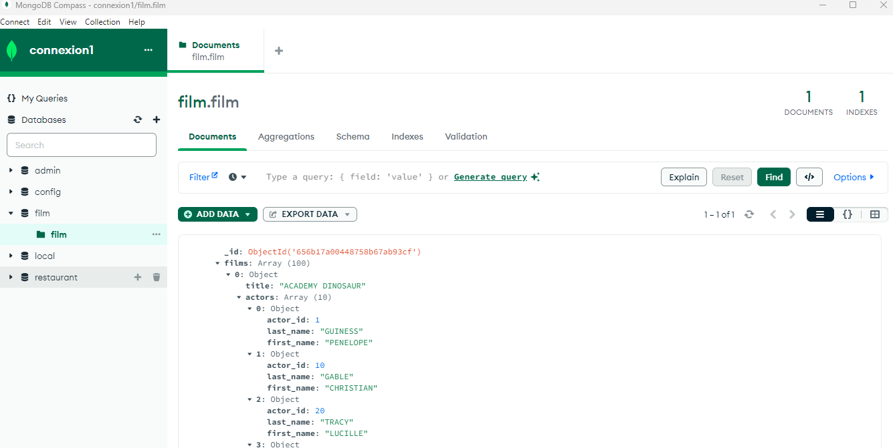
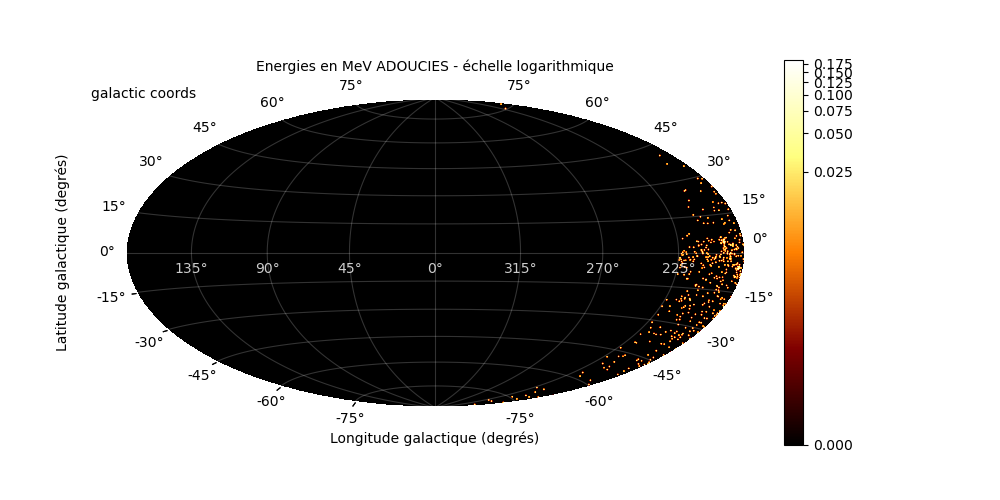

Je transforme les données en solutions utiles 🌍📊
Hans Orden BADA
Alternant Data Scientist / Actuaire passionné de projets innovants
Alternant Data Scientist / Actuaire passionné de projets innovants
Je suis actuellement en Master 2 en ingénierie des données à Toulouse. Avec 2 ans d'expérience en alternance, je suis passionné par l'analyse, l'automatisation, et les projets à impact. Je cherche à créer des solutions simples, efficaces et utiles, que ce soit en actuariat, en data science ou pour l’innovation tech. 📄 Télécharger mon CV


Entraînement d’un modèle de classification d’images à l’aide de TensorFlow et Keras. Prétraitement des images, création d’un pipeline d’entraînement, validation du modèle avec des métriques claires (accuracy, loss). Projet réalisé en équipe avec visualisation des résultats sur Streamlit.
Technos : Python, Keras, TensorFlow, Pandas, Streamlit

Conception et alimentation d'une base MongoDB à partir d’un scraping web automatisé de critiques de films. Analyse des sentiments, extraction des notes et génération de rapports. Travail autour de la qualité des données non structurées.
Technos : Python, BeautifulSoup, MongoDB, Matplotlib

Étude de données climatiques fournies par la NASA pour expliquer certains phénomènes terrestres : variation des températures, anomalies atmosphériques et visualisation des tendances. Génération de graphiques dynamiques.
Technos : Python, NumPy, Pandas, Matplotlib, Seaborn

Python
SQL
Docker
Oracle
Power BI
Excel
PowerPoint
Git
MongoDB
Spark
Azure
GCP
Grâce à ma maîtrise avancée de Power BI, je conçois des tableaux de bord interactifs qui transforment des données complexes en indicateurs visuels facilement interprétables. J’aide les décideurs à suivre les performances, détecter les écarts, et agir vite. Mon objectif : simplifier l’analyse pour maximiser l’impact opérationnel.

Avec Python, je développe des scripts et solutions intelligentes qui automatisent les tâches, analysent les données, et accélèrent les décisions. Que ce soit pour nettoyer des fichiers, créer des modèles prédictifs ou automatiser des rapports, Python est mon allié pour créer de la valeur rapidement et efficacement.

Avec Python, je développe des scripts et solutions intelligentes qui automatisent les tâches, analysent les données, et accélèrent les décisions. Que ce soit pour nettoyer des fichiers, créer des modèles prédictifs ou automatiser des rapports, Python est mon allié pour créer de la valeur rapidement et efficacement.

"Hans Bada est un étudiant talentueux, rigoureux et passionné, que j’ai encadré durant un stage de modélisation prédictive. Il a rapidement maîtrisé les techniques d’apprentissage automatique et su travailler en autonomie. Sa capacité à résoudre des problèmes complexes et à bien communiquer ses idées m’a particulièrement impressionnée. Je le recommande sans hésitation pour toute opportunité en data science."
📎 Télécharger la lettre de recommandation
"Hans BADA est un étudiant sérieux, volontaire et très impliqué, notamment en statistique et en projets de groupe. Il pose des questions pertinentes et participe activement aux cours. Son contrat d’apprentissage lui a permis d’élargir ses compétences en bases de données. Je recommande vivement sa candidature en Master MIASHS.."
📎 Télécharger la lettre de recommandation📍 Adresse : Toulouse, France
📞 Téléphone : +33 6 58 70 21 81
📧 Email : hansordenbada@gmail.com